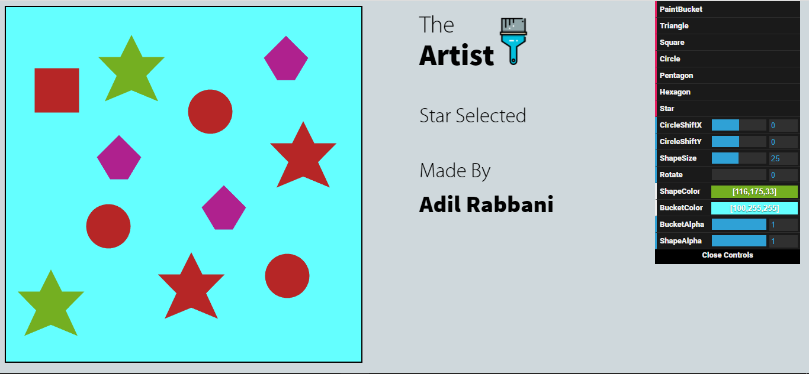
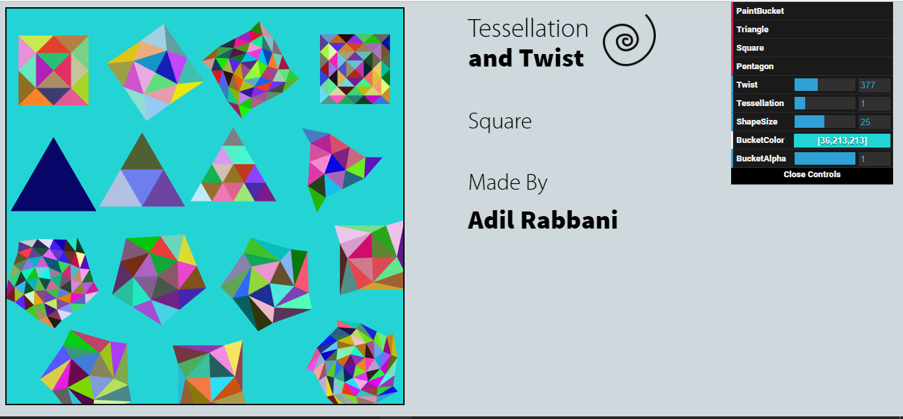
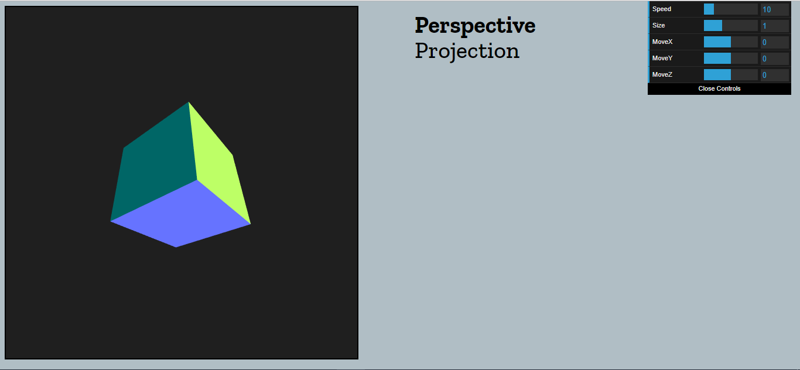
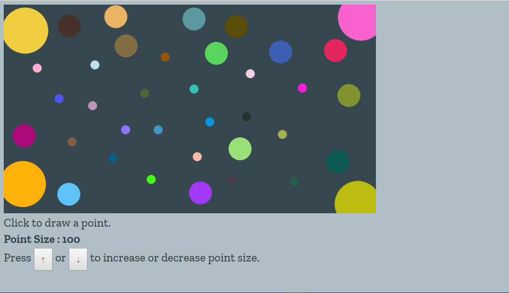

Experiments
This page is for my Experiments. Experiments are not responsive to mobile devices.
Basic Shapes on WebGL
Experimented with different shapes on WebGL. Click here to go to the experiment.

Tessellation on WebGL
Implemented tessellation on WebGL. You can tessellate shapes as well as twist them according to the selected level. Click here to go to the experiment.

Perspective Projection on WebGL
Showcasing perspective projection in WebGL. Click here to go to the experiment.

Circular Point in WebGL
WebGL by default draws sqaure points. This is an experiment which draws circular points using gl_PointCoord. Click here to go to the experiment.
